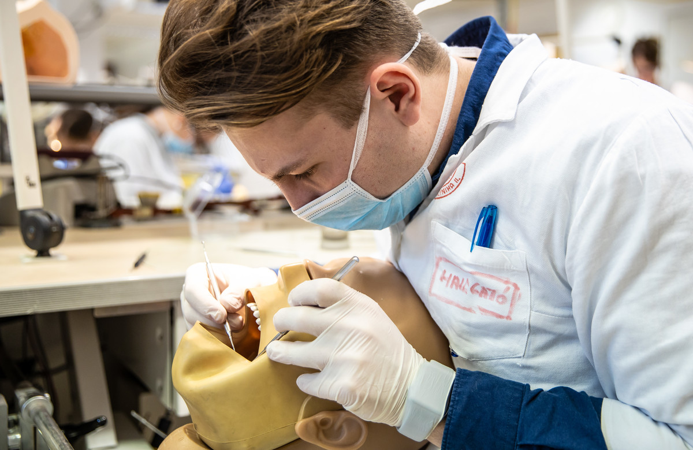
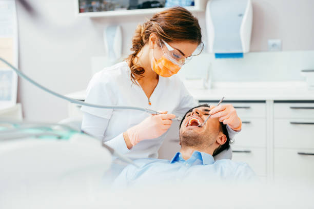
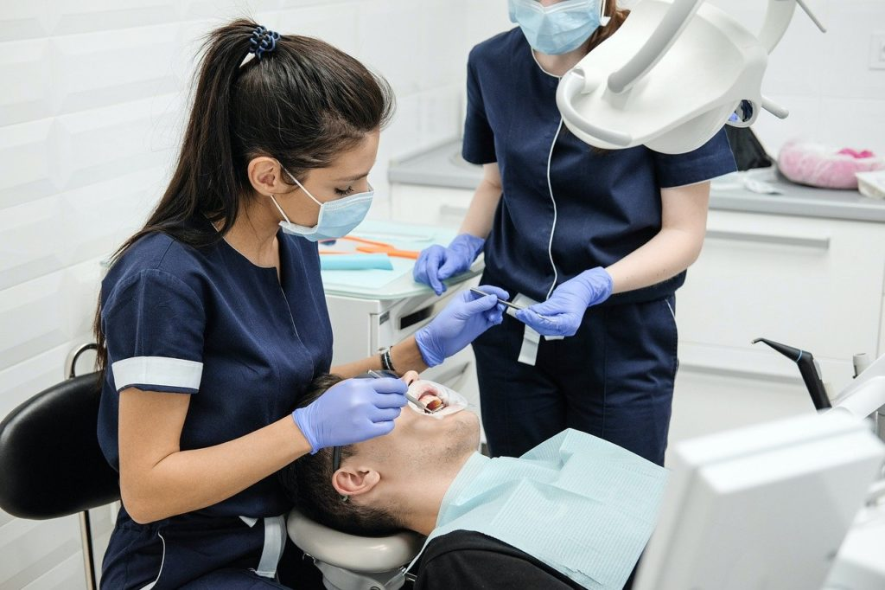

Kérdése van? 📞 +36 (50) 501-64-61 | ✉️ sunshinedentalfogaszat@gmail.com
|  |  |  |
A Sunshine Dental orvosai a szakma iránti szenvedéllyel és kiemelkedő szakértelemmel várják pácienseiket. Fogorvosaink többéves tapasztalattal rendelkeznek különböző fogászati szakterületeken, beleértve a megelőző fogászatot, esztétikai kezeléseket és a szájsebészetet is. Minden páciensünkre egyénileg figyelünk, türelmesen és gondosan ismertetjük a kezelési lehetőségeket, hogy a lehető legjobb megoldást találjuk meg számukra.